2025年北京市石景山区中考地理试卷 原卷解析
2025年北京市石景山区中考地理试卷
参考答案与试题解析
一、第一部分。本部分共20题，每题1分，共20分。在每题列出的四个选项中，选出最符合题目要求的一项。
春天的石景山繁花锦簇。图1为石景山区赏花地图。读图，完成第1～3题。
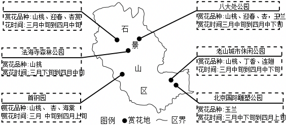
1．赏花的最佳天气是（ ）
A．B．C．D．
【答案】B
【分析】在天气预报图上，我们可以看到一些符号，这些符号是用来表示天气状况的，它们都有特定的含义。据图中信息解答。
【解答】解：赏花的最佳天气是B选项中的晴天，A所示的是雾，C是浮尘，D是大雪。
故选：B。
2．在石景山赏花（ ）
①大部分赏花地可以欣赏山桃
②可在北京国际雕塑公园欣赏玉兰
③三月中旬到四月中下旬是赏花最佳时间
④八大处公园赏完迎春后可北上至首钢园赏海棠
A．①②③B．①②④C．①③④D．②③④
【答案】A
【分析】题干题供的地图是石景山区赏花地图，根据图示提供的信息分析解答。
【解答】解：春天在石景山赏花大部分赏花地可以欣赏山桃，故①正确；
可在北京国际雕塑公园欣赏玉兰，故②正确；
三月中旬到四月中下旬是赏花最佳时间，故③正确；
八大处公园赏完迎春后可向西南至首钢园赏海棠，故④错误。
故选：A。
3．生活在石景山，我们可以“春赏花、夏纳凉、秋观景、冬嬉雪”，主要是由于（ ）
A．海陆分布B．地处热带C．地球运动D．地球形状
【答案】C
【分析】地球绕地轴不停转动，叫地球自转。地球自转的方向是自西向东，自转的周期是一天。地球自转产生的现象是昼夜交替、日月星辰东升西落和时间差异。地球公转的周期是一年，方向是自西向东，公转的中心是太阳。公转产生的现象有季节的变化、昼夜长短的变化、五带的产生、正午太阳高度的变化等。
【解答】解：生活在石景山，我们可以“春赏花、夏纳凉、秋观景、冬嬉雪”，主要是由于地球公转运动产生的四季交替。
故选：C。
我国在2025年《政府工作报告》中提出，积极应对人口老龄化，大力发展“银发经济”。如图为我国1994年～2024年全国人口数量和老龄化率（年龄65岁及以上人口占总人口的比重）统计图。读图，完成第4、5题。
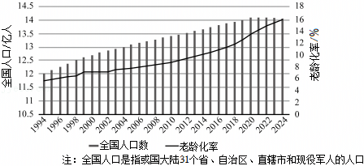
4．读图可知，我国近30年的人口变化趋势是（ ）
A．人口总数持续增长B．人口增速不断加快
C．人口分布日趋均衡D．老龄化率整体上升
【答案】D
【分析】2021年5月11日，第七次全国人口普查结果公布，全国人口共141178万人，与2010年的133972万人相比，增加了7206万人，增长5.38%。中国人口数量约占世界人口总数的1/5，是世界上人口最多的国家。
【解答】解：读图分析可知，我国近30年人口总数后期有所下降；人口增速有所放缓；人口分布不均衡的状况依然存在，并没有日趋均衡；老龄化率整体上升。综上所述，故D正确，符合题意。
故选：D。
5．“银发经济”是指以服务老年人为主的产业，“银发经济”的崛起将带动的行业是（ ）
A．户外运动和网络直播B．医疗保健和养老服务
C．汽车销售和服装制造D．休闲娱乐和仓储物流
【答案】B
【分析】我国人口老龄化形势十分严峻，老年人口的数量不断增加，加重了社会负担。
【解答】解：“银发经济”是以服务老年人为主的新兴产业。“银发经济“的崛起将带动的行业有医疗保健、养老服务等。故B正确，符合题意。
故选：B。
“一夫当关，万夫莫开”。如图为我国古代22个重要关隘分布图。读图，完成第6、7题。
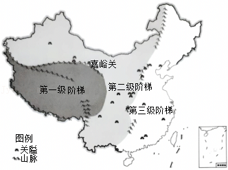
6．我国古代重要关隘（ ）
A．主要位于陆上国界线附近
B．集中分布在平原地区
C．主要位于阶梯分界处附近
D．集中分布在西北地区
【答案】C
【分析】读图分析可知，我国古代重要关隘主要位于阶梯分界处附近。
【解答】解：A、古代关隘主要用于国内军事防御、控制交通要冲，并非主要位于陆上国界线附近，不符合题意。
B、平原地区地势平坦，无险可守，不符合关隘“据险而建”的特点，不符合题意。
C、读图分析可知，我国古代重要关隘主要位于阶梯分界处附近，因阶梯交界处多山脉，地势险要，是交通咽喉，利于设关防守，符合题意。
D、关隘在全国各地均有分布，并非集中在西北地区，不符合题意。
故选：C。
7．在嘉峪关，可能看到的自然景观是（ ）
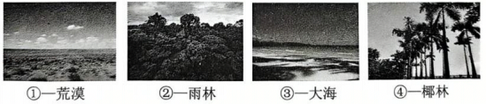
A．①B．②C．③D．④
【答案】A
【分析】西北地区地处内陆，气温冷热变化剧烈，年降水量表现出由东向西逐渐减少的态势。总的来说，干旱是本区自然环境的主要特征。
【解答】解：西北地区由从东到西，距海越来越远，海洋的湿润气流难以到达。因此降水越来越少，气候越来越干旱，自然景观大致上呈现出由草原向荒漠草原、荒漠的变化。嘉峪关位于我国西北地区，在嘉峪关，可能看到的自然景观是①——荒漠。
故选：A。
如图为我国青藏地区农业分布图。读图，完成第8、9题。
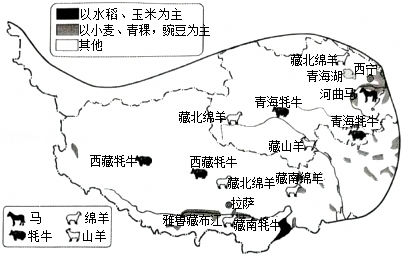
8．青藏地区（ ）
A．畜牧业主要分布在平原地区
B．大面积种植水稻等耐寒作物
C．畜牧业主要以饲养家禽为主
D．种植业主要分布在河谷地区
【答案】D
【分析】青藏高原地势高耸，被称为“世界屋脊”，青藏高原海拔高，气候高寒，空气稀薄，太阳辐射强。
【解答】解：青藏地区气候高寒，只有河谷地带由于海拔较低，气温较高，加之水源充足，地形平坦，土壤肥沃，适合种植业发展，形成河谷农业。青藏地区的河谷农业以青海的湟水谷地、西藏的雅鲁藏布江谷地最为典型。青藏地区主要的农作物有喜温凉的青稞、小麦等。
故选：D。
9．到青藏地区可以体验（ ）
A．穿藏袍B．尝米线C．骑骆驼D．住窑洞
【答案】A
【分析】我国气候复杂多样，季风气候显著。我国东半部有大范围的季风气候，自南而北有热带季风气候、亚热带季风气候、温带季风气候。西北地区大多为温带大陆性气候。青藏高原区是独特的高原山地气候。
【解答】解：青藏地区主要少数民族是藏族，藏族的传统服饰是藏袍，藏袍比较厚重，便于御寒，当中午气温高时，藏袍便于脱下一只袖子散热，早晚气温低时，便于裹紧藏袍防寒，能适应当地气候寒冷、昼夜温差大的特点。到青藏地区可以体验。
故选：A。
2024年10月18日，山西省“长城—黄河—太行一号”旅游公路全线贯通。“三个一号”旅游公路连通5630个村庄，串联531处国家重点保护建筑和779处省级重点保护建筑。如图为山西省“三个一号”旅游公路和主要景点分布图。读图，完成第10～12题。
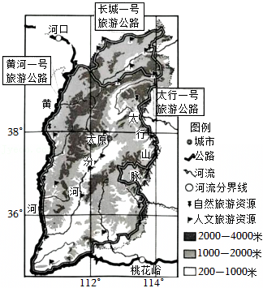
10．山西省（ ）
A．地跨东西半球B．地势南高北低
C．地处太行山脉东侧D．位于黄河中游地区
【答案】D
【分析】山西省位于东半球；地势东北高，西南低；位于太行山脉的西侧；位于黄河中游地区。
【解答】解：A、我国位于东半球、北半球，因此山西省位于东半球，不符合题意。
B、山西省地势东北高，西南低，不符合题意。
C、山西省地处黄土高原，位于太行山脉的西侧，不符合题意。
D、黄河上中下游的界点是内蒙古的河口，河南省的桃花峪，山西省位于黄河中游地区，符合题意。
故选：D。
11．“三个一号”旅游公路主线（ ）
A．可至山西境内所有主要景点
B．沿途景点均为人文旅游资源
C．大致沿省界延伸，呈环状分布
D．途经地区平坦开阔，道路平直
【答案】C
【分析】读图分析可知，“三个一号”旅游公路主线大致沿省界延伸，呈环状分布。
【解答】解：A、山西景点众多，分布广泛，因此“三个一号”旅游公路主线不可能到达山西境内所有主要景点，不符合题意。
B、山西省有丰富的自然旅游资源和人文旅游资源，“三个一号”旅游公路主线沿途景点不可能均为人文旅游资源，不符合题意。
C、“三个一号”旅游公路主线大致沿省界延伸，呈环状分布，符合题意。
D、山西省地形复杂多样，有山地、高原等多种地形，“三个一号”旅游公路主线途经地区不可能都平坦开阔，道路平直，不符合题意。
故选：C。
12．“三个一号”旅游公路的贯通，有利于（ ）
①打造观景路线，助力旅游业发展
②串联多处景点，方便游客游览
③沟通祖国南北，增加煤炭的输出，
④优化乡村交通，带动乡村发展
A．①②③B．①②④C．①③④D．②③④
【答案】B
【分析】“三个一号”旅游公路的贯通，有利于打造观景路线，助力旅游业发展；串联多处景点，方便游客游览；优化乡村交通，带动乡村发展。
【解答】解：①“三个一号”旅游公路作为旅游公路，其设计和贯通可以将沿途的风景串联起来，打造观景路线，助力旅游业发展，符合题意。
②“三个一号”旅游公路的贯通，有利于串联多处景点，方便游客游览，符合题意。
③“三个一号”旅游公路主要功能是服务于旅游相关活动，促进旅游业的发展，并非沟通祖国南北，增加煤炭的输出为目的，不符合题意。
④旅游公路的建设会改善乡村地区的交通状况，使得乡村的交通更加便利。交通便利后，会吸引更多游客前往乡村旅游，带动乡村发展，符合题意。
故选：B。
南美洲是番茄种植的起源地，通过多种途径向外传播。如图为番茄传播路线示意图。读图，完成第13～15题。
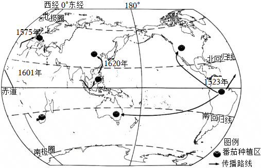
13．番茄的传播（ ）
A．向西到大洋洲B．经太平洋到亚洲
C．向西南到非洲D．经印度洋到欧洲
【答案】A
【分析】南美洲是番茄种植的起源地，通过多种途径向外传播。
【解答】解：观察番茄传播路线示意图，可以看到番茄是从南美洲向西传播到大洋洲，故A正确；
从图中传播路线可知，番茄不是从美洲出发，经太平洋传播到亚洲的，故B错误；
由图可知番茄是向东南传播到非洲，并非向西南，故C错误；
根据图中传播路线，番茄是经大西洋传播到欧洲，不是经印度洋，故D错误。
故选：A。
14．番茄种植区（ ）
A．西半球多于东半球B．南半球多于北半球
C．主要分布在南温带D．集中在中低纬地区
【答案】D
【分析】东西半球分界线是20°W和160°E组成的经线圈，20°W以东、160°E以西为东半球，20°W以西、160°E以东为西半球。南北半球的划分是以0°纬线即赤道为界，赤道以北为北半球，以南为南半球。纬度区的划分，0°～30°为低纬度地区，30°～60°为中纬度地区，60°～90°为高纬度地区。热带的纬度范围是23.5°N～23.5°S，北温带的纬度范围是23.5°N～66.5°N，北寒带的纬度范围是66.5°N～90°N，南温带的纬度范围是23.5°S～66.5°S，南寒带的纬度范围是66.5°S～90°S。
【解答】解：读图可知，番茄种植区东半球多于西半球，北半球多于南半球，主要分布在北温带，集中在中低纬地区。
故选：D。
15．番茄的传播可以（ ）
A．增加原产地的年降水量
B．改变传入地的热量条件
C．消除地域发展水平差异
D．促进世界农业技术进步
【答案】D
【分析】番茄又称西红柿，于明代传入我国，起初作为观赏植物，后才逐渐食用。
【解答】解：南美洲是番茄种植的起源地，通过多种途径向外传播。番茄的传播可以促进世界农业技术进步；番茄的传播不会增加原产地的年降水量、不会改变传入地的热量条件、不会消除地域发展水平差异。
故选：D。
2024年是中国极地科考40周年。在我国发行的极地科考纪念币上，呈现有北极熊、极光、雪龙号科考船、冰芯取样等场景。如图为我国北极科考站位置示意图和极地科考纪念币图案。读图，完成第16～18题。
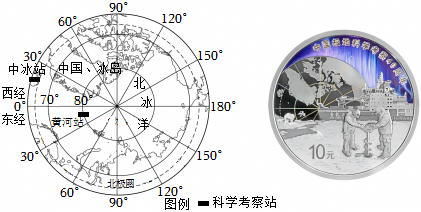
16．由中国和冰岛共同筹建的中﹣冰站的经纬度位置最接近（ ）
A．65.7°S，17.4°WB．65.7°N，17.4°W
C．65.7°N，17.4°ED．65.7°S，17.4°E
【答案】B
【分析】在经纬网上，若相邻两条经线的经度向东增大，就是东经，用符号E表示，若相邻两条经线的经度向西增大，就是西经，用符号W表示；若相邻两条纬线的纬度向北增大，就是北纬，用符号N表示，若相邻两条纬线的纬度向南增大，就是南纬，用符号S表示。
【解答】解：根据所学知识及读图分析可知，中﹣冰站在北极圈（66.5°N）附近，经度在0°﹣30°W之间，四个选项中B选项符合题意。
故选：B。
17．黄河站位于中—冰站的（ ）
A．东北方向B．西北方向C．西南方向D．东南方向
【答案】A
【分析】在经纬网地图上，经线指示南北方向，纬线指示东西方向。地球的自转方向是自西向东，从北极看，呈逆时针，从南极看，呈顺时针。
【解答】解：在经纬网地图上，经线指示南北方向，纬线指示东西方向。地球的自转方向是自西向东，从北极看，呈逆时针，从南极看，呈顺时针。根据所学知识及读图分析可知，黄河站位于中—冰站的东北方向。
故选：A。
18．北极科考主要关注的是（ ）
①气象监测
②旅游资源的开发
③冰川考察
④生物多样性保护
A．①②③B．①②④C．①③④D．②③④
【答案】C
【分析】根据所学知识可知，北极科考主要关注的是气象监测；冰川考察；生物多样性保护。
【解答】解：①监测北极的气象状况可以帮助科学家更好地理解全球气候变化的机制，提高气象预报的准确性等，符合题意。
②北极生态环境脆弱，旅游资源开发可能会对北极环境造成破坏，目前不是北极科考关注的重点方向，不符合题意。
③北极地区有大面积的冰川，冰川的变化可以反映全球气候变暖的情况，符合题意。
④北极是众多珍稀动植物的栖息地。北极生态系统很脆弱，受到气候变暖和人类活动的影响，许多物种的生存面临挑战，所以生物多样性保护是北极科考的重要内容，符合题意。
故选：C。
如图为法国地形图及马赛市气温曲线和降水量柱状图。读图，完成第19、20题。
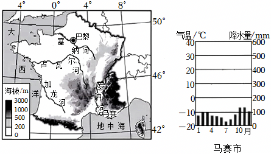
19．法国（ ）
A．位于欧洲西部，大西洋西岸
B．北极圈穿过，处高纬地区
C．地势大致为东南高，西北低
D．罗讷河是该国最长的河流
【答案】C
【分析】法国是欧洲西部的一个大国，它西临大西洋，隔英吉利海峡和英国相望。它主要在北温带。地形以平原和丘陵为主。法国大西洋沿岸地区属于温带海洋性气候，盛产小麦；地中海沿岸地区属于地中海气候，盛产葡萄。
【解答】解：法国位于欧洲西部，大西洋东岸；法国位于中纬度地区；法国地势特征为东南高，西北低；卢瓦尔河是该国最长的河流。
故选：C。
20．马赛位于法国南部，是法国葡萄主要种植区，马赛盛产葡萄的有利自然条件是（ ）
A．全年温和湿润B．夏季光热充足
C．气候雨热同期D．人力资源丰富
【答案】B
【分析】马赛是法国第二大城市，亦为法国最古老的城市，法国南部行政、经济、文化和交通中心。马赛港为地中海沿岸最大港口、欧洲第四大港口。
【解答】解：马赛位于地中海沿岸，这里为典型的地中海气候，夏季炎热干燥，光热充足，冬季温和多雨，雨热不同期，非常有利于葡萄的生长，因此马赛盛产葡萄。
故选：B。
二、第二部分。本部分共4题，共40分。
21．（11分）中国是灌溉文明古国，是灌溉工程遗产类型最丰富、分布最广泛、灌溉效益最突出的国家。截止2024年9月，世界灌溉工程遗产名录上共有38个中国工程。图1为中国灌溉工程遗产分布图。阅读图文资料，回答下列问题。
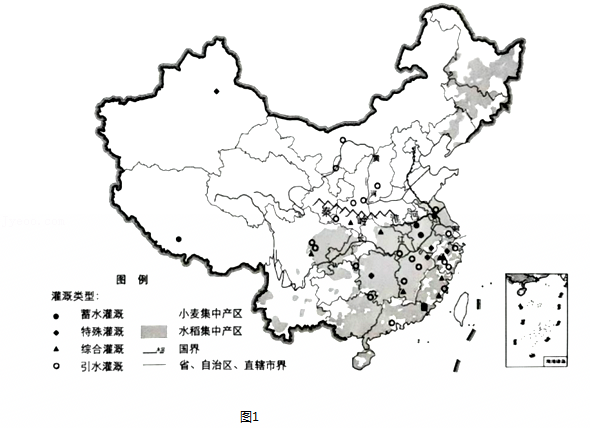
（1）目前，我国入选世界灌溉工程遗产数量最多的省份是 浙江 省，从灌溉类型看，该省共有 4 种类型的灌溉工程。
浙江金华白沙溪三十六堰是古代“以潭筑堰”的典型工程，沿45公里河道落差168米，共建36座梯级堰坝。其设计融合了引水、蓄水、防洪、航运等功能，至今仍发挥作用。图2为白沙溪干流流经地区局部地形图及金华市气温曲线和降水量柱状图。
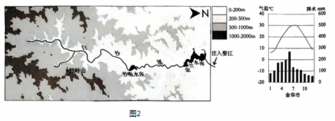
（2）分析古人通过修建堰坝改造白沙溪自然条件的基本思路，完成下列框图。
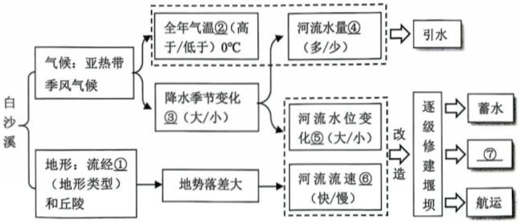
① 山地 、② 高于 、③ 大 、④ 多 、⑤ 大 、⑥ 快 。
中国是世界第一灌溉大国，灌溉面积达10.75亿亩。灌溉离不开水源，实践证明，发展高效节水灌溉是加快农业现代化的一项重要举措，并为保障国家粮食安全作出重要贡献。图3为我国1990年～2020年灌溉平均亩均用水量变化。
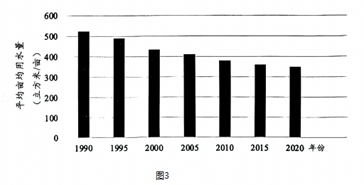
（3）1990年～2020年，我国灌溉平均亩均用水量的变化特点是 逐渐减少 。请你从灌溉方式、作物品种两方面任选一点，为我国全方位加快推进高效节水灌溉提出合理化建议。
【答案】（1）浙江省；4；（2）山地；高于；大；多；大；快；（3）逐渐减少；大力发展滴灌、喷灌等节水灌溉技术。
【分析】（1）目前，我国入选世界灌溉工程遗产数量最多的省份是浙江省，该省共有4种类型的灌溉工程。 （2）白沙溪所在地区全年气温高于0℃，河流水量多，降水季节变化大，河流水位季节变化大，该地区地形多山地和丘陵，河流流速快。
（3）1990年～2020年，我国灌溉平均亩均用水量逐渐减少。我国要大力发展滴灌、喷灌等节水灌溉技术，要发展节水农业。
【解答】解：（1）读图可得，目前，我国入选世界灌溉工程遗产数量最多的省份是浙江省，从灌溉类型看，该省共有4种类型（蓄水灌溉、引水灌溉、综合灌溉、特殊灌溉）的灌溉工程。
（2）白沙溪所在地区属于亚热带季风气候，全年气温高于0℃，河流水量多，降水季节变化大，河流水位季节变化大，该地区地形多山地和丘陵，地势落差大，河流流速快。
（3）1990年～2020年，我国灌溉平均亩均用水量的变化特点是逐渐减少。为我国全方位加快推进高效节水灌溉提出合理化建议是：大力发展滴灌、喷灌等节水灌溉技术；发展节水农业等。
故答案为：（1）浙江省；4；（2）山地；高于；大；多；大；快；（3）逐渐减少；大力发展滴灌、喷灌等节水灌溉技术。
22．（9分）荒漠是“限制人类活动的干旱区”。图1为以哈密为核心的塔里木盆地、准噶尔盆地、阿拉善与河西走廊地区荒漠分布图。阅读图文资料，回答下列问题。
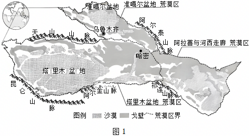
（1）哈密位于新疆维吾尔自治区 乌鲁木齐 （行政中心）的东南方，地处 戈壁 （沙漠/戈壁）景观。
（2）以哈密为核心的荒漠区，地处 内陆 （内陆/沿海），距海洋 远 ，年降水量 少 ，植被 稀疏 （茂密/稀疏），因此成为我国荒漠最为集中的地区。
2024年12月22日，哈密百万千瓦“光热+光伏”一体化综合能源示范项目实现并网发电，该电站通过光伏板直接发电，可实现24小时持续供电。项目全部投产后，每年可减排二氧化碳150万吨。从生态角度看，项目的建成，减少了土地的水分蒸发并降低了沙尘暴的发生频率。表1为哈密市各月平均降水量和降水天数。
表1
月份 | 1 | 2 | 3 | 4 | 5 | 6 | 7 | 8 | 9 | 10 | 11 | 12 |
降水量（mm） | 1.3 | 1.5 | 1.2 | 2.0 | D.C3.9 | 6.6 | 7.3 | 5.3 | 3.3 | 3.3 | 2.0 | 1.3 |
降水天数（日） | 1.7 | 1.1 | 1. | 1.5 | 2.0 | 3.6 | 4.4 | 3.4 | 2. | 1.4 | 1.0 | 1.8 |
（3）哈密“光热+光伏”一体化项目，依托了这里有丰富的 A （单项选择）。请你结合材料，分析说明哈密市该能源丰富的主要原因 降水少，光照强烈，太阳辐射强 。
A.太阳能
B.地热能
C.水能
D.核能
（4）哈密“光热+光伏”一体化项目的开发和应用，有利于 A 。（单项选择）
①防风固沙
②减轻空气污染
③利用能源
④扩大耕地面积
A.①②③
B.①②④
C.①③④
D.②③④
【答案】（1）乌鲁木齐；戈壁；
（2）内陆；远；少；稀疏；
（3）A；降水的，光照强烈，太阳辐射强；
（4）A。
【分析】新疆深居大陆内部，形成了温带大陆性气候。夏季云量少，日照充足，昼夜温差大，作物消耗养料少，有利于瓜果和糖料作物的糖分积累，所以瓜果特别甜。在天山山麓及塔里木盆地和准噶尔盆地的边缘地带，依靠高山冰雪融水的灌溉，分布着较多的绿洲农业区，新疆的城市、人口和交通主要分布在这里。
【解答】解：（1）哈密位于新疆维吾尔自治区乌鲁木齐的东南方，地处戈壁景观。
（2）以哈密为核心的荒漠区，地处内陆，距海洋远，年降水量少，植被稀疏，因此成为我国荒漠最为集中的地区。
（3）哈密“光热+光伏”一体化项目，依托了这里有丰富的A太阳能，哈密市能源丰富的主要原因降水少，光照强烈，太阳辐射强。
（4）哈密“光热+光伏”一体化项目的开发和应用，有利于防风固沙，减轻空气污染，利用能源。故选A。
故答案为：
（1）乌鲁木齐；戈壁；
（2）内陆；远；少；稀疏；
（3）A；降水少，光照强烈，太阳辐射强；
（4）A。
23．（10分）澜沧江一湄公河合作是中国与湄公河五国共同发起的新型次区域合作机制。该合作框架以“3+5”为核心，旨在推动区域经济一体化、可持续发展和社会进步。图1为澜沧江—湄公河流域图。阅读图文资料，回答下列问题。
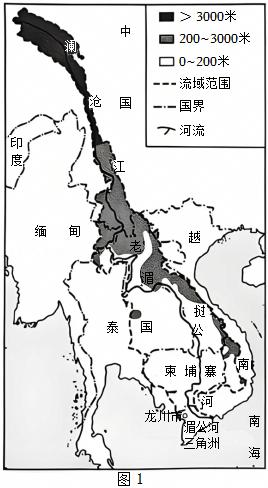
同饮一江水 命运紧相连
（1）澜沧江—湄公河发源于我国的青藏高原， 自北向南 （河流流向）注入 南 海，沿途经过中国、缅甸、老挝、泰国、柬埔寨、 越南 六个国家，是东南亚流经国家最多的河流。
一方有困难 八方来支援
2016年3月～5月，湄公河三角洲地区遭受了严重旱情。为此我国政府通过加大景洪水库出库流量，对湄公河实施应急补水，以帮助下游国家应对旱情。图2为龙川市气温曲线和降水量柱状图及澜沧江—湄公河合作框架图。
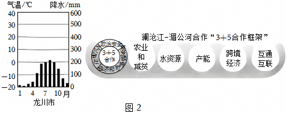
（2）澜沧江—湄公河流域属于热带季风气候，该气候全年 高温 ，有明显的旱、雨季之分，流域内3月～5月大部分时间属于 旱 （旱/雨）季，加上受气候异常现象影响，造成严重早情。我国通过加大 景洪 水库出库流量进行补水，从“3+5合作框架”看，该合作属于 南南合作 领域合作。
（3）澜沧江—湄公河合作框架的重点领域包括 C 。（单项选择）
①水电开发
②军事联盟
③防灾减灾
④农业技术合作
A.①②③
B.①②④
C.①③④
D.②③④
互联加互通 硕果连连现
2023年，中老铁路（中国昆明—老挝万象）国际货运量达600万吨，同比增长50%。云南省对老挝的进出口总额增至25亿美元，增幅超66%。铁路的开通，使老挝的物流成本降低30%～40%，沿线城市的旅游收入增长40%，接待国际游客数量增长50%，其中，中国游客占比超30%。
（4）依据资料，说出中老铁路开通对中国或老挝带来的积极影响。（至少两点）
【答案】（1）自北向南；南；越南；
（2）高温；旱；景洪；南南合作；
（3）C；
（4）对老挝的影响：老挝是内陆国，中老铁路开通带动老挝经济发展，提高当地运输效率和水平，为老挝创造大量的就业机会，促进老挝同中国及周边国家的经济合作；对中国的影响：中老铁路连接中国西南与东南亚国家，推动中国产业链向东南亚延伸，提升区域经济一体化水平。
【分析】（1）湄公河发源于我国的青藏高原，在中国境内该河流称为澜沧江，自北向南注入南海，沿途经过中国、缅甸、老挝、泰国、柬埔寨、越南六个国家，是东南亚流经国家最多的河流。澜沧江﹣湄公河流域属于热带季风气候，该气候全年高温，有明显的旱、雨季之分，流域内3月～5月大部分时间属于旱季。
（2）发达国家主要分布在北半球，发展中国家主要分布在南半球和北半球的南部，针对发展中国家与发达国家分布的南北差异，国际上把这种差别说成是南北差距；发展中国家与发达国家之间的商谈称为南北对话，发展中国家之间的互助合作称为南南合作。
【解答】解：读图可知，（1）澜沧江﹣湄公河发源于我国的青藏高原，自北向南注入南海，沿途经过中国、缅甸、老挝、泰国、柬埔寨、越南六个国家，是东南亚流经国家最多的河流。
（2）澜沧江﹣湄公河流域为热带季风气候，气候特点为全年高温，有明显的旱、雨季两季；澜沧江﹣湄公河流域内3月～5月大部分时间属于旱季，加上受气候异常现象影响，造成严重早情。我国通过加大景洪水库出库流量进行补水；我国和东南亚国家均属于发展中国家，从“3+5合作框架”看，该合作属于南南合作。
（3）澜沧江﹣湄公河合作框架的重点领域包括：①水电开发、③防灾减灾、④农业技术合作，故选项C符合题意。
（4）中老铁路开通对中国或老挝带来了积极影响，对老挝的影响：老挝是内陆国，中老铁路开通带动老挝经济发展，提高当地运输效率和水平，为老挝创造大量的就业机会，促进老挝同中国及周边国家的经济合作。对中国的影响：中老铁路连接中国西南与东南亚国家，推动中国产业链向东南亚延伸，提升区域经济一体化水平。
故答案为：
（1）自北向南；南；越南；
（2）高温；旱；景洪；南南合作；
（3）C；
（4）对老挝的影响：老挝是内陆国，中老铁路开通带动老挝经济发展，提高当地运输效率和水平，为老挝创造大量的就业机会，促进老挝同中国及周边国家的经济合作；对中国的影响：中老铁路连接中国西南与东南亚国家，推动中国产业链向东南亚延伸，提升区域经济一体化水平。
24．（10分）2025年1月1日，哈萨克斯坦正式成为金砖国家伙伴国。如图为哈萨克斯坦地图及阿斯塔纳市气温曲线和降水量柱状图。阅读图文资料，回答下列问题。
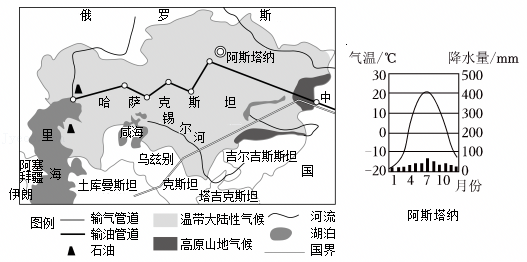
（1）哈萨克斯坦地处亚欧大陆中心地带，西临 里 海，东部与 中国 （国家）、北部与俄罗斯接壤，南与乌兹别克斯坦、吉尔吉斯斯坦等国为邻，是世界上面积最大的 内陆 （内陆/临海）国。
（2）该国以 温带大陆性 气候为主，这主要是由于受 海陆位置 （影响因素）的影响。境内的锡尔河属于 内 （内/外）流河，受气候影响，锡尔河 有 （有/无）结冰期。
（3）哈萨克斯坦不仅是金砖伙伴国，也是我国共建“一带一路”陆上的重要合作伙伴。我国与哈萨克斯坦建设了输油管道和输气管道，该工程有助于 ABE 。（多项选择）
A.进一步保障了我国的能源安全
B.实现中国与哈萨克斯坦的合作共赢
C.完全满足中国对油、气资源的需求
D.中国向哈萨克斯坦大量输送油气资源
E.哈萨克斯坦将资源优势转为经济优势
【答案】（1）里；中国；内陆；
（2）温带大陆性；海陆位置；内；有；
（3）ABE。
【分析】（1）哈萨克斯坦地处欧亚大陆中心地带，西临里海，东接中国，北邻俄罗斯，南部与乌兹别克斯坦、土库曼斯坦和吉尔吉斯斯坦接壤，地理位置十分重要。哈萨克斯坦是一个位于中亚的内陆国家，也是世界上最大的内陆国。
（2）在气温和降水量变化示意图中，横坐标轴表示月份，纵坐标轴左侧表示气温，右侧表示降水量，气温年变化用平滑的曲线表示，降水年变化用长方形柱状表示；观察气温曲线图，可以知道气温最高月和气温最低月，气温最高值和气温最低值，观察降水柱状图，可以知道降水集中的月份和各月降水量。阿斯塔纳市属于温带大陆性气候。
（3）我国与哈萨克斯坦建设了输油管道和输气管道，该工程有助于进一步保障了我国的能源安全；实现中国与哈萨克斯坦的合作共赢；哈萨克斯坦将资源优势转为经济优势。
【解答】解：（1）哈萨克斯坦地处亚欧大陆中心地带，西临里海，东部与中国、北部与俄罗斯接壤，南与乌兹别克斯坦、吉尔吉斯斯坦等国为邻，是世界上面积最大的内陆国。
（2）读气候资料图可知，该国以温带大陆性气候为主，这主要是由于受海陆位置的影响。境内的锡尔河属于内流河，受气候影响，锡尔河有结冰期。
（3）A、建设油气管道可保障我国能源进口渠道，保障能源安全，符合题意。
B、合作建设管道实现双方资源、经济互补、合作共赢，符合题意。
C、管道运输无法完全满足中国对油、气资源的需求，不符合题意。
D、管道运输可将哈萨克斯坦油气资源输送至中国，不符合题意。
E、哈萨克斯坦通过输出资源，将资源优势转为经济优势，符合题意。
故选ABE。
故答案为：
（1）里；中国；内陆；
（2）温带大陆性；海陆位置；内；有；
（3）ABE。